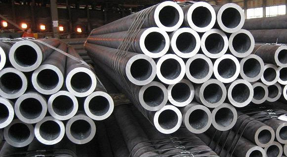

ASTM A335 Chrome Moly AISI 4130 Capillary Pipe in India | Chrome Moly AISI 4130 Capillary Pipe & Capillary Tube | Chrome Moly AISI 4130 Seamless Pipe | Chrome Moly AISI 4130 Welded Pipe | Chrome Moly AISI 4130 Seamless Mechanical Tubing | Chrome Moly AISI 4130 For Hydraulic Control Lines | Chrome Moly AISI 4130 Coil Tubing | Chrome Moly AISI 4130 Semi Seamless Capillary Tubes | Chrome Moly AISI 4130 ERW Capillary Tube | Chrome Moly AISI 4130 Welded Capillary Tubes | Chrome Moly AISI 4130 EFW Capillary Tubes | Chrome Moly AISI 4130 Pipe | Chrome Moly AISI 4130 Capillary Tube | Chrome Moly AISI 4130 Tubing
Are you searching for AISI 4130 Seamless Pipes & Tubes, we spent our significant time in ASTM A335 Chrome Moly AISI 4130 Capillary Pipe since 1975. Offer amazing costs joining substantial rebates against a scope of Chrome Moly AISI 4130 review Seamless Pipe, Chrome Moly AISI 4130 SCH 40 Pipe, Chrome Moly AISI 4130 SCH 80 Pipe, Chrome Moly AISI 4130 Capillary Tubes For Medical Devices, Chrome Moly AISI 4130 Electropolished Capillary Tubes Products in India
Metal Ministry Inc. is one of the main Manufacturer, Supplier and Exporter of Chrome Moly AISI 4130 Capillary Pipes and Tubes that are really made from High Quality of Standard Raw Materials and are outlined according to with national and universal gauges. AISI 4130 is a chromium molybdenum combination steel detail. It is provided as round bar regularly in the solidified and tempered condition with a hardness of 18-22 HRc. With a lower carbon content territory AISI 4130 gives better weldability, to the detriment of through thickness quality, than that of other oil and gas steel evaluations, for example, AISI 4140. AISI 4130 combination steel is promptly machineable in the supply state of 18-22 HRc.
AISI 4130 is generally utilized for an assortment of utilizations in the oil and gas part. Average applications incorporate segments, for example, valve bodies, pumps and fittings. AISI 4130 steel is generally provided prepared warmth treated with a hardness of 18-22HRC. On the off chance that further warmth treatment is required toughened AISI 4130 ought to be warmed gradually to 870-890°C and after satisfactory dousing at this temperature extinguish in oil. Temper when apparatuses achieve room temperature.
AISI or SAE 4130 Capillary Pipes & Tubes is a low-combination steel containing chromium and molybdenum as fortifying specialists. The steel has great quality and sturdiness, weldability and machinability. AISI/SAE 4130 review is an adaptable combination with great barometrical consumption protection and sensible quality up to around 600º F (315º C). It demonstrates great general blends of quality, durability. also, weakness quality.
- Aircraft engine mounts
- Welded tubing
- Valve bodies
- Pumps
- Fittings
| Standard | ASTM A519 Grade 4130 Pipe. |
| Type | Seamless / ERW / Welded / Fabricated / LSAW Pipes |
| Form | Round, Square, Rectangular, Hydraulic Etc. |
| End | Plain End, Bevelled End, Treaded |
| Length | Single Random, Double Ranidom & Cut Length |
| • | ASTM A 335 / 519 Chrome Moly AISI 4130 Pipes & Tubes |
| • | ASTM A 335 / 519 Chrome Moly AISI 4130 Seamless Pipes & Tubes |
| • | ASTM A 335 / 519 Chrome Moly AISI 4130 Welded Pipes & Tubes |
| • | Chrome Moly AISI 4130(UNS No. N10665) Seamless Pipes & Tubes |
| • | Chrome Moly AISI 4130(UNS No. N10665) Welded Pipes & Tubes |
| • | Chrome Moly AISI 4130 Capillary Pipes |
| • | Chrome Moly AISI 4130 Capillary Tubes |
Metal Ministry Inc. Supplies Chrome Moly AISI 4130 Capillary Pipes & Tubes in Agartala, Agra, Agra Rampur, Ahmedabad, Aizawl, Ajmer, Aligarh, Allahabad, Alwar, Amaravati, Ambala, Ambattur, Ambernath, Amravati, Amritsar, Aurangabad, Bangalore, Bareilly, Belgaum, Bhagalpur, Bhavnagar, Bhilai, Bhiwandi, Bhopal, Bhubaneswar, Bidhannagar, Biharsharif, Bikaner, Bilaspur, Bokaro, Chandigarh, Chennai, Chittoor, Coimbatore, Cuttack, Dahod, Davanegere, Dehradun, Delhi, Dhanbad, Dharamsala, Dindigul, Diu, Durgapur, Erode, Faridabad, Fatehpur, Gandhidham, Gandhinagar, Ghaziabad, Greater Hyderabad, Greater Mumbai, Greater Warangal, Gurgaon, Guwahati, Gwalior, Haldia, Howrah, Hubballi-Dharwad, Hyderabad, Imphal, Indore, Jabalpur, Jaipur, Jalandhar, Jammu, Jamnagar, Jamshedpur, Jhansi, Jodhpur, Junagadh, Kakinada, Kalyan-Dombivali, Kanpur, Karnal, Kavaratti, Kochi, Kohima, Kolhapur, Kolkata, Kota, Lucknow, Ludhiana, Madurai, Mehsana, Mangalore, Mangaluru, Mira-Bhayandar, Moradabad, Morbi, Mumbai, Muzaffarpur, Mysore, Nagpur, Namchi, Nasik, Navi Mumbai, NDMC, Nellore, New Delhi, New Town Kolkata, Noida, Oulgaret, Pali, Panaji, Panipat, Panvel, Pasighat, Patiala, Patna, Pimpri-Chinchwad, Port Blair, Puducherry, Pune, Raipur, Rajkot, Ranchi, Raurkela, Industrial Township, Rourkela, Sagar, Salem, Satna, Secunderabad, Shaharanpur, Shillong, Siliguri, Silvassa, Solapur, Srinagar, Surat, Thane, Thanjavur, Thiruvananthapuram, Thoothukudi, Thrissur, Tiruchirapalli, Tirunelveli, Tirupur, Tumkur, Udaipur, Ujjain, Ulhasnagar, Vadodara, Vapi, Varanasi, Vasai-Virar, Vellore, Vishakhapatnam.
Metal Ministry Inc. exports Chrome Moly AISI 4130 Capillary Pipes & Tubes to Countries like India, United States, United Arab Emirates, Canada, Pakistan, Peru, Chile, Spain, France, United Kingdom, Indonesia, Israel, Iran, Kuwait, Mexico, Malaysia, Nigeria, Serbia, Singapore, Taiwan, Chile, Venezuela, Ecuador, Saudi Arabia, Netherlands, Brazil, Colombia, Ghana, Iran, Denmark, Poland, Australia, Afghanistan, Bahrain, Costa Rica, Egypt, Iraq, Jordan, South Korea, Kazakhstan, Sri Lanka, Lithuania, Norway, Oman, Philippines, Poland, Qatar, Russia, Vietnam, South Africa, Nigeria, Mexico, Turkey, Hungary, Algeria, Angola, Argentina, Austria, Azerbaijan, Bangladesh, Belarus, Belgium, Bhutan, Bolivia, Bulgaria, Croatia, Czech Republic, Estonia, Finland, Greece, Italy, Japan, Libya, Romania, Thailand, Trinidad & Tobago,Tunisia, Ukraine, Yemen, Hong Kong, Gabon, China, Portugal, Switzerland, New Zealand, Sweden, Slovakia, Kenya, Lebanon, Morocco, Mongolia.